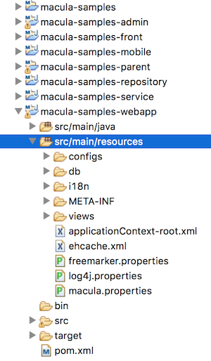

项目构建
Maven及目录结构
通过macula-tools-archtype可以自动生成如下项目结构：

macula tools默认创建的项目结构是典型的三层架构，包含了如下模块：
- macula-samples：项目最外层的模块，主要用于打包分发项目；
- macula-samples-parent：所有模块的父模块，提供了公共依赖项的配置和其它子模块依赖项的版本设置；
- macula-samples-repository：该模块包含domain和repository两个package，domain package存放与数据库表的映射类，repository存放数据库的存取操作类，domain是基于JPA和Hibernate的，repository主要采用spring-data；
- macula-samples-service：该模块主要包含业务逻辑层，通过调用repository来完成数据库的读写；
- macula-samples-admin/front/mobile：界面层模块，包含所有的Controller、Freemarker模块、Javascript文件，Controller主要基于Spring MVC，freemarker和javascript基于Macula UI(Mower)的规范编写页面；
- macula-samples-webapp：war包的打包模块，该模块包含了全局配置文件，javascript、css、image等静态资源文件，web.xml等J2EE WEB模块的标准文件，并负责将上述模块打包成一个war发布。
例 3.1. macula-samples-parent中唯一的文件pom.xml
<?xml version="1.0" encoding="UTF-8"?>
<project xmlns="http://maven.apache.org/POM/4.0.0" xmlns:xsi="http://www.w3.org/2001/XMLSchema-instance" xsi:schemaLocation="http://maven.apache.org/POM/4.0.0 http://maven.apache.org/xsd/maven-4.0.0.xsd">
<modelVersion>4.0.0</modelVersion>
<groupId>org.macula.samples</groupId>
<artifactId>macula-samples-parent</artifactId>
<version>0.0.1-SNAPSHOT</version>
<packaging>pom</packaging>
<name>macula-samples-parent</name>
<properties>
<project.build.sourceEncoding>UTF-8</project.build.sourceEncoding>
<jdkLevel>1.7</jdkLevel>
<jvmargs>-XX:MaxPermSize=384m -Xms512m -Xmx1024m</jvmargs>
<macula.version>3.0.0-SNAPSHOT</macula.version>
<macula.plugins.version>3.0.0-SNAPSHOT</macula.plugins.version>
<mockito.version>1.9.5</mockito.version>
<junit.version>4.12</junit.version>
<hsql.version>2.3.2</hsql.version>
<spring.version>4.1.7.RELEASE</spring.version>
<servlet.version>3.0.1</servlet.version>
<jta.version>1.1</jta.version>
<oracle.version>11.2.0.3.0</oracle.version>
<mysql.version>5.1.35</mysql.version>
<liquibase.version>3.0.8</liquibase.version>
</properties>
.....
</project>
在macula-samples-parent的maven设置中，指定了maven第三方包获取点：
<repositories>
<repository>
<id>macula-repo</id>
<name>macula-repo</name>
<url>http://maven.infinitus.com.cn:8081/nexus/content/groups/public</url>
</repository>
</repositories>
当前所有macula平台所需要使用的第三方包均可以在上述获取点获得，为了规范第三方包的使用以及避免版本冲突，在进行依赖macula平台开发的业务系统中，只允许依赖macula平台的模块，对于需要依赖第三方包的，需要提交审批，审批通过后，将在上述maven获取点能获取到该第三方报，业务系统方能使用，否则不允许使用。
下面以macula-samples下的包为例，介绍其目录及文件的含义。
jar模块目录结构
在maven创建项目后，将创建目录：
- src/main/java ：该目录放置java的主要开发代码，即最终运行需要的java类，这个目录的内容最终将打包到jar中。
- src/main/resources ：该目录放置除java带的其他资源文件，如xml、properties文件等，这个目录的内容最终也将被打包到jar中。
- src/test/java ：该目录主要存放JUnit测试的java代码，用于测试阶段的代码，这个目录的内容将不打包到jar中。
src/test/resources ：该目录存放测试下需要使用的资源文件，如xml、properties文件等，这个目录的内容也不会打包到jar文件中。
重要
需要特别强调的是，测试文件必须放在test目录下，以降低打包jar文件的大小以及代码结构的清晰度，对于编写的JUnit用例，必须放在测试目录。另外对于src/main/resources中存放文件的目录结构（包括Spring配置文件的放置、Freemarker模块文档的放置等），将在其他相应章节中介绍，这里主要介绍大方向的目录结构。
war模块目录结构
war模块可通过maven-wtp插件，将war模块直接发布到Eclipse定义的Server中，对于war模块，除了具备jar模块的文档结构外，另外增加了src/main/webapp目录，该目录按标准的J2EE应用的目录格式和命名方式。特别的，对于src/main/webapp下的目录结构，也需要严格按照下列命名：
- webapp/META-INF ：下面放置该模块的一些自描述信息。
- webapp/resources ：该目录下放置静态内容信息，包括图片文件、javascript文件等。
webapp/WEB-INF ：该目录为标准的J2EE要求目录。
另外，我们还定义了src/main/deploy目录，该目录主要用于定义与运行环境相关的配置文件，包含dev、sit、uat、prd等各种运行环境的配置文件，并需要和pom.xml中相应的profile结合决定采用什么样的运行环境打包。
文件命名
为了规范项目的开发，在文件命名方面有一定的规则：
Java包（文件夹）的命名 Java包（文件夹）必须以小写字母命名，同时按照模块名称建立父包，并按照用途可创建controller、domain、repository、service、util、support、vo子包，避免创建晦涩难懂的包名，加大系统的复杂度。
在macula-samples-repository模块中，包名不包含业务模块名称：
- domain：org.macula.samples.domain
- repository：org.macula.samples.repository
在macula-samples-service和admin/front/mobile模块中，包名最好包含业务模块的名称：
- service：org.macula.samples.service.demo1.service
- controller：org.macula.samples.admin.demo1.controller
- 国际化文件 国际化的properties文件，统一放置在resources/i18n目录下，并按模块名称建立子目录，如macula-samples-admin的国际化文件必须放置在resources/i18n/macula-samples-admin目录下，这样可避免文件的重名。
Spring配置文件 对Spring的配置文件，必须放置在resources/META-INF/spring目录下，并在命名上按下列要求命名：
- 应用层的命名：按照macula-模块名称-app.xml的方式命名。
- WEB层的命名：按照macula-模块名称-servlet.xml的方式命名。
Freemarker文件 Freemarker文件放置在resources/views目录下，并按模块名称创建子目录。
如resources/views/admin/demo1/xxx/edit.ftl
自定义目录
在应用开发中，需要自定义目录的情况较少，如无特殊需要，尽量减少自定义目录的情况，自定义目录会增加项目组沟通成本以及维护成本。
对于自定义目录的情况大致有：
为多种环境创建不同的配置 这种情况下，主要使用src/main/deploy目录创建同名文件，并在pom.xml中通过定义不同的打包方式，产生如生产环境发布包、测试环境发布包等。
webapp目录下增加其他静态文件 对war模块，对于webapp下需要载入的大量的静态文件以及脚本文件，可能会加入自定义目录。
配置文件
macula平台下涉及的文件包括：
- macula.properties：开发平台配置文件
- Spring配置文件，将在配置文件章节介绍
- log4j.properties：log4j的配置文件
- freemarker.properties：freemarker模版的配置文件
依赖包及版本
Macula开发平台自身依赖了大量的第三方包，在业务系统开发中，使用依赖macula平台的模块即可，对于具体的依赖包及版本，可查看macula-parent模块中定义的pom.xml文件。